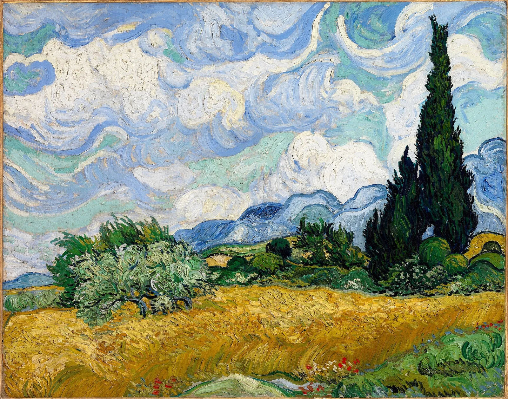
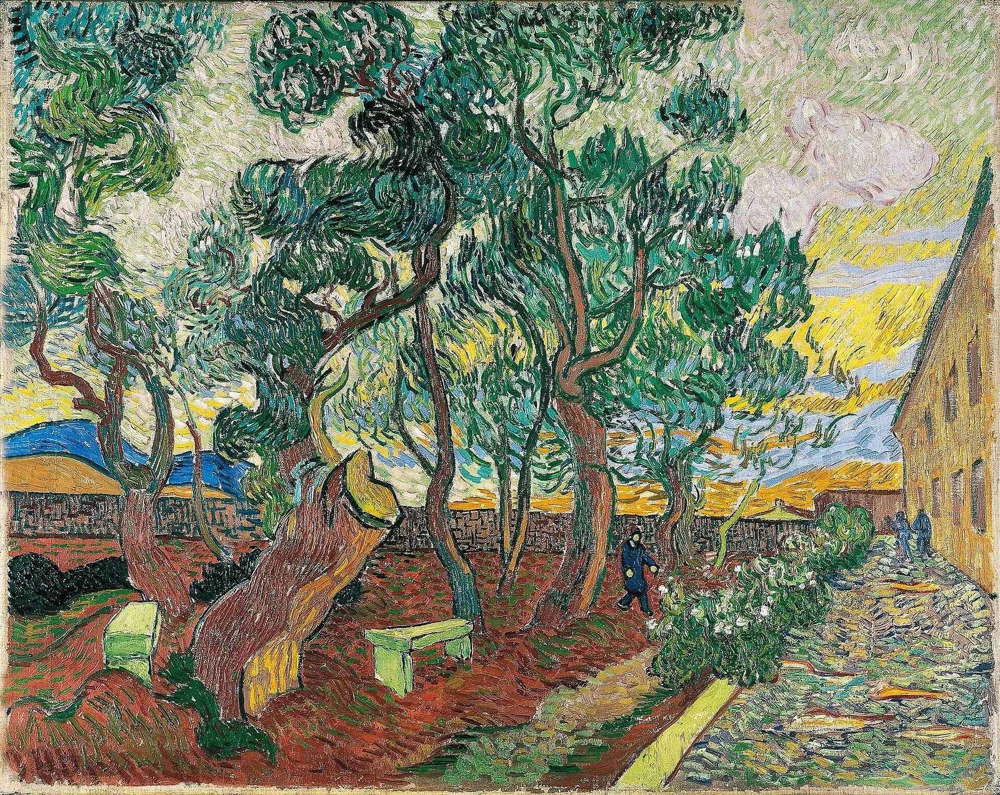
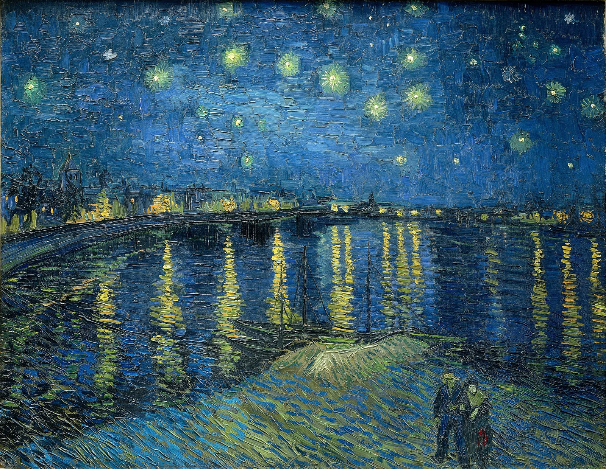

AI for nature.
Tech for good.
We are a non-profit dedicated to software development, biodiversity conservation, and sustainable development.
Our Mission
We use science and technology as tools to protect the planet. There is a long and increasing list of environmental challenges; we want to help solve them through:
Open Software
Open code. Free to use, free to modify.
Cutting-edge Tech
Latest innovations made accessible.
Real Applications
Useful implementations that impact the real world.




Artificial Intelligence
We develop and deploy AI models tailored for ecological research. From species identification to anomaly detection, our tools turn raw data into actionable insights.
Bioacoustics
Listening to nature reveals what eyes cannot see. Our bioacoustic pipelines capture and analyze wildlife sounds to monitor populations and detect threats in real time.
Computer Vision
Cameras in the wild generate massive datasets. Our computer vision systems automate the detection and classification of animals, plants, and environmental changes.
Ecosystem Monitoring
Long-term health of ecosystems requires continuous observation. We build integrated monitoring platforms that fuse sensor data into coherent environmental pictures.
IoT & Embedded Systems
Hardware that lasts in the jungle. We design low-power devices and edge-computing nodes that bring intelligence directly to remote field locations.
Synthetic Datasets
Training robust models requires diverse data. We generate synthetic datasets that augment real-world collections and improve model generalization across habitats.